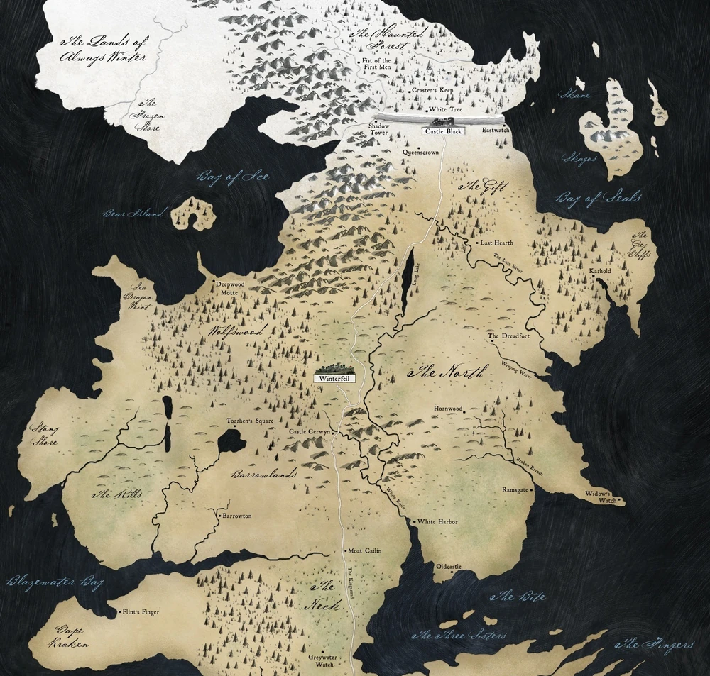
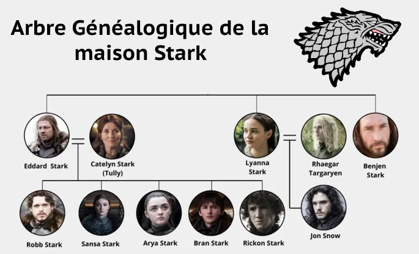

Le Nord est l'une des régions constitutives de Westeros et fut une nation gouvernée par des Rois du Nord
pendant des milliers d'années avant la Conquête.
Depuis le Grand Concile de l'an 305, le Nord a retrouvé son indépendance, sous le règne de reine Sansa
I.
La région couvre toute la zone au sud du Mur et au nord du Neck.
Les Bolton, les Karstark, les Manderly, et les Omble sont aussi des maisons du Nord.
Les bâtards dans cette région sont appelés Snow.
Le Nord est vaste en superficie puisqu'il s'agit de la plus grande région des Sept Couronnes, et il est
presque aussi
grand que tous les autres territoires combinés.
La région est peu peuplée, avec de vastes étendues sauvages, des forêts, des collines couvertes de pins et
des montagnes enneigées, parsemée de villages et de petits
hameaux.
Son climat est rude et froid en hiver et parfois il neige en été.
Le Nord a deux principales frontières géographiques, le Mur au nord et le Neck au sud.
Le Nord est bordé de grandes mers de chaque coté, la Mer Grelotte à l'est et les Mers du Crépuscule à
l'ouest.
Winterfell, le siège ancestral de la Maison Stark, est un grand château situé dans le Nord.
À proximité se trouve la ville d'hiver.
Le Bois-aux-Loups, la plus grande forêt des Sept Couronnes, s'étend du nord-ouest de la Baie des Glaces à la
Presqu'île de Merdragon.
Motte-la-Forêt, le siège de Maison Glover se trouve dans le Bois-aux-Loups.
La Maison Mormont de l'île-aux-Ours se trouve dans la Baie des Glaces.
Les montagnes du nord qui s'étendent du Bois-aux-Loups jusqu'au Mur sont habitées par des clans des
montagnes du Nord.
Entre les montagnes et le Bois-aux-Loups se trouve Highpoint, le siège de la Maison Whitehill.
Les Nordiens descendent (presque) tous des Premiers Hommes.
Ils ont la réputation d'être simples, robustes, et d'être une race de durs qui n'ont que du mépris pour le
confort du Sud.
La plupart d'entre eux suivent encore les Anciens dieux et leurs barrals, et ont peu d'affinités avec les
nouveaux dieux.
Il y a quelques maisons qui suivent la Religion des Sept, y compris la Maison Manderly de Blancport, la
Maison Whitehill, et la Maison Wells.
Leur vie entière repose sur le fait que l'hiver vient et qu'ils doivent se préparer pour survivre.
Le relief et le climat du Nord ne facilitent pas les nécessités de la vie quotidienne.
Dans un tel environnement, il n'y a pas de place pour les courtoisies creuses, les rituels de cour, la
culture et les réjouissances.
Les Nordiens ont la mémoire longue.
Un seigneur qui ne cherche pas sa vengeance légitime risque de voir ses propres hommes se retourner contre
lui.
En raison de leurs croyances religieuses, la plupart des hommes du nord refusent de prendre des ordres et ne
peuvent donc devenir chevaliers, mais il y a quelques chevaliers du Nord qui suivent encore les anciens
dieux au lieu des Sept. Les Nordiens tiennent la Garde de Nuit en haute estime.

Winterfell
Winterfell est le siège de la maison Stark  . C'est un grand château situé au centre du Nord, d'où
le chef de Winterfell
la famille Stark
. C'est un grand château situé au centre du Nord, d'où
le chef de Winterfell
la famille Stark  règne sur son peuple. Winterfell désigne aussi le bourg attenant à ses
remparts, appelé
aussi la ville d'hiver.
règne sur son peuple. Winterfell désigne aussi le bourg attenant à ses
remparts, appelé
aussi la ville d'hiver.
Le château est situé à côté de la Route Royale qui les mène depuis le mur jusqu'à Port-Réal, plus d'un
millier de miles au sTyrellud. Il est situé au sommet de sources chaudes qui gardent le château au chaud
même dans
les pires hivers. Des sinueuses cryptes situées sous le château contiennent les dépouilles des rois et des
seigneurs Stark  et garde l'histoire de l'ancienne famille. Le château existe depuis des
millénaires. Il a
été bâti par Brandon le Bâtisseur.
et garde l'histoire de l'ancienne famille. Le château existe depuis des
millénaires. Il a
été bâti par Brandon le Bâtisseur.
Le château est mis à la torche par Ramsay Snow après que Theon Greyjoy a été trahi par ses propres hommes.
Après la chute de Moat Cailin, l'armée Bolton s'installe à Winterfell où Ramsay Bolton vit et se déclare
seigneur de Winterfell et gouverneur du Nord.
Winterfell est reprise aux Bolton par la coalition Arryn-Stark menée par Jon Snow et Sansa Stark  suite à la
Bataille des Bâtards. Cette bataille voit le rétablissement de la domination de la maison Stark
suite à la
Bataille des Bâtards. Cette bataille voit le rétablissement de la domination de la maison Stark  sur le Nord.
Suite à la nomination de Bran Stark
sur le Nord.
Suite à la nomination de Bran Stark  comme Roi des Andals et des Premiers Hommes par les
seigneurs et dames
de Westeros, Winterfell devient le château de la reine du Nord, Sansa Stark
comme Roi des Andals et des Premiers Hommes par les
seigneurs et dames
de Westeros, Winterfell devient le château de la reine du Nord, Sansa Stark  qui règne sur le
royaume
indépendant du Nord.
qui règne sur le
royaume
indépendant du Nord.

Liste des seigneurs de Winterfell
| Photo |
Nom |
Maison et Blason |
Titres |
Règne |
 |
Eddard "Ned" Stark |
 Stark Stark |
Seigneur de Winterfell, gouverneur du Nord, Défenseur du Nord, Main du Roi et Protecteur du
Royaume |
280-298 |
 |
Robb Stark |
 Stark Stark |
Seigneur de Winterfell et Roi du Nord |
298-300 |
 |
Brandon "Bran" Stark |
  Stark Stark |
Seigneur de Winterfell, prince, Roi des Andals et des Premiers Hommes |
298-299 |
Winterfell
 |
Theon Greyjoy |
 Greyjoy Greyjoy |
Prince des îles de Fer et "Prince de Winterfell" |
299 |
 |
Roose Bolton |
 Bolton Bolton |
Seigneur de Fort-Terreur, Gouverneur du Nord, Défenseur du Nord et Seigneur de Winterfell |
300-303 |
 |
Ramsay "Snow" Bolton |
 Bolton Bolton |
Héritier de Fort-Terreur, Gouverneur du Nord, Défenseur du Nord et Seigneur de Winterfell |
303 |
 |
Jon Snow |
 Stark Stark |
Lord commandant de la Garde de Nuit, Gouverneur du Nord, Défenseur du Nord et Roi du Nord |
303-304 |
 |
Sansa Stark |
 Stark Stark |
Princesse, Lady de Winterfell et Reine du Nord |
304-... |
Le mur
Le Mur est une gigantesque muraille de glace, de pierre et de magie qui sépare le royaume des Sept Couronnes
des terres glacées et sauvages situées au-delà. Il mesure près de sept cents pieds (environ 213 mètres) de
haut et cent lieues (environ 483 km) de long d'est en ouest. Il s'étend de la Baie des Phoques jusqu'à la
Baie des Glaces, où il se termine en rejoignant le fleuve La Laiteuse. En outre, le Mur est défendu et
maintenu en état par les frères jurés de la Garde de Nuit.
L’extrémité est du Mur (Fort-Levant) est détruite par le Roi de la Nuit à l'aide des flammes bleues de
Viserion, permettant à l'armée des morts d'aller au sud.
Principaux membres de la garde de nuit
| Photo |
Nom |
Maison et blason |
 |
Jeor Mormont |
 Mormont Mormont |
 |
Alliser Thorne |
 Thorne Thorne |
 |
Jon Snow |
 Stark Stark |
 |
Eddison Tallett |
 Tallett Tallett |
 |
Samwell "Sam" Tarly |
 Tarly Tarly |
 |
Aemon Targaryen |
 Targaryen Targaryen |
Au-dela du mur
Au-delà du Mur est un terme désignant la zone septentrionale de Westeros, qui couvre les terres au nord du
Mur. Elle demeure la seule région du continent qui n'est pas comprise dans les Sept Couronnes, et échappe
donc à l'autorité royale. Elle est peuplée par le Peuple libre.
On retrouve le Peuple Libre, appelés "sauvageons" par les ouestriens, les enfants de la forêt, les marcheurs
blancs
Liste des principaux habitants d'au-delà du mur
| Photo |
Nom |
Peuple |
 |
Le Roi de la Nuit |
 Marcheur blanc Marcheur blanc |
 |
La corneille à 3 yeux |
 |
 |
Feuille |
 Enfants de la forêt Enfants de la forêt |
 |
Mance Ryder |
 Peuple libre Peuple libre |